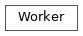

cxworker.worker¶Worker:
Create and manage worker API, shepherd and minio handle.cxworker.worker.Worker[source]¶Bases: object
Create and manage worker API, shepherd and minio handle.
app¶Flask app serving the worker API.
load_config(config)[source]¶Load the given configuration and create minio and shepherd handles.
| Parameters: | config (WorkerConfig) – worker configuration to be loaded |
|---|---|
| Return type: | None |
run(host, port)[source]¶Run the API server, and shepherd.
The worker has to be previously configured with load_config().
| Parameters: | |
|---|---|
| Return type: |
|